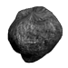

Stargate: Planetary Defense  JavaScript, HTML5
Reimagined classic arcade-style game with a Stargate twist.
- Implemented a custom key handler to allow for multiple simultaneous key events
- Coded vector-based two-dimensional elastic collisions for ship/asteroid interactions (source)
- Included several difficulty levels and game durations for variability of game play